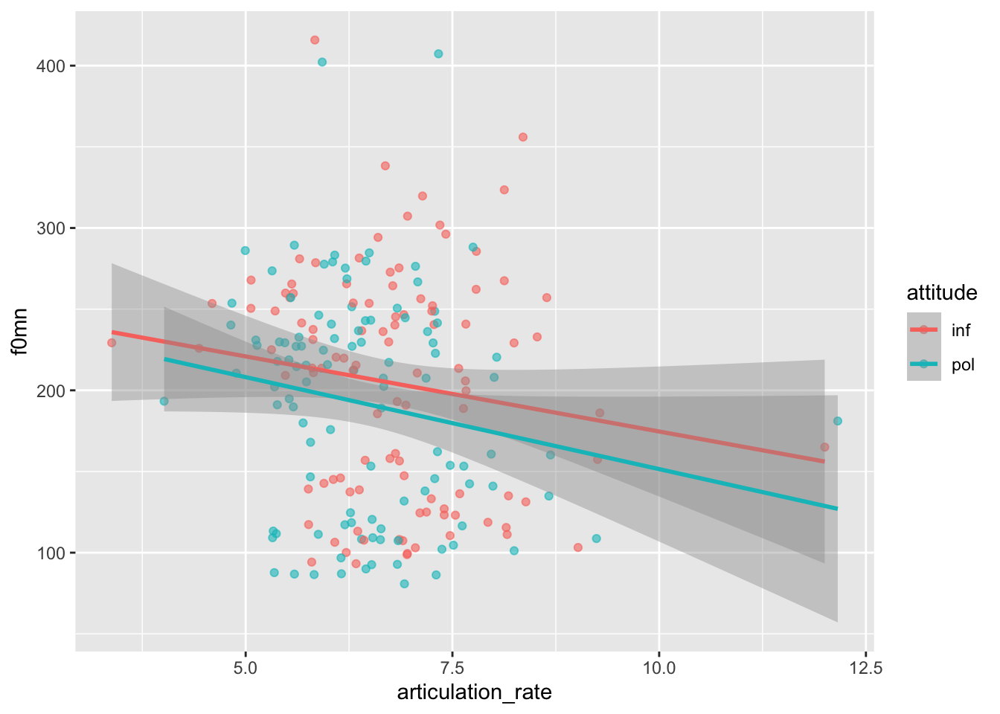
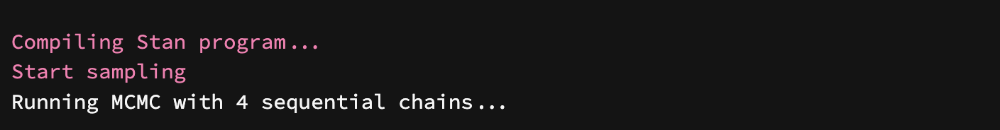
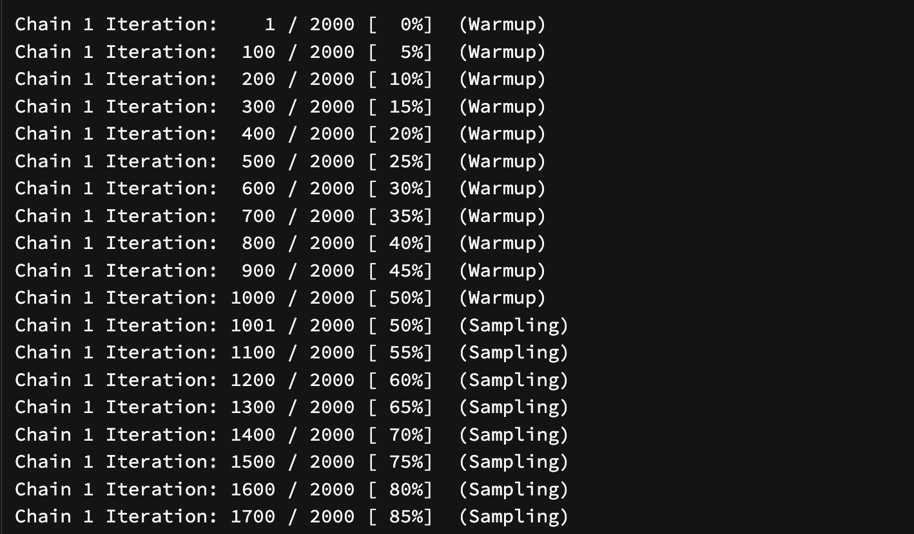

# A tibble: 212 × 27
subject gender birthplace musicstudent months_ger scenario task attitude
<chr> <chr> <chr> <chr> <dbl> <dbl> <chr> <chr>
1 F1 F seoul_area yes 18 6 not inf
2 F1 F seoul_area yes 18 6 not pol
3 F1 F seoul_area yes 18 7 not inf
4 F1 F seoul_area yes 18 7 not pol
5 F1 F seoul_area yes 18 1 dct pol
6 F1 F seoul_area yes 18 1 dct inf
7 F1 F seoul_area yes 18 2 dct pol
8 F1 F seoul_area yes 18 2 dct inf
9 F1 F seoul_area yes 18 3 dct pol
10 F1 F seoul_area yes 18 3 dct inf
# ℹ 202 more rows
# ℹ 19 more variables: total_duration <dbl>, articulation_rate <dbl>,
# f0mn <dbl>, f0sd <dbl>, f0range <dbl>, inmn <dbl>, insd <dbl>,
# inrange <dbl>, shimmer <dbl>, jitter <dbl>, HNRmn <dbl>, H1H2 <dbl>,
# breath_count <dbl>, filler_count <dbl>, hiss_count <dbl>,
# nasal_count <dbl>, sil_count <dbl>, ya_count <dbl>, yey_count <dbl>Tutorial 01: BRM basics
Get started
The tutorials are designed to be self-paced hands-ons to give you the chance to practice running Bayesian linear models in a semi-guided way.
To start, double click on the basicBayesKit.Rproj file to open the RStudio project with all the necessary files.
In the project folder, you will find the data in the data/ folder and a script called code.R where you will be writing your R code.
I have pre-filled the script with some necessary code to attach a few packages and read the data.
The polite data
The polite data contains several acoustic measures of the speech of Korean students living in Germany who where asked to speak using a formal (pol) or informal (inf) register (see column attitude).
In this tutorial we will focus on three variables:
f0mn: the mean f0 across the entire utterance.attitude:informal vspolite condition.articulation_rate: number of syllables per second.
Here’s what the data looks like.

We want now to estimate the effect of attitude and articulation_rate on f0mn.
We can do that using the function brm() from the brms package and fit a Bayesian linear model.
brm() basics
Let’s assume mean f0 values are distributed according to a Gaussian distribution (you may also have encountered Gaussian distributions under the name “normal distribution”).
\[f0mn \sim Gaussian(\mu, \sigma)\]
We want to estimate the following probability distributions:
\[ \begin{aligned} \mu & \sim Gaussian(\mu_1, \sigma_1) \\ \sigma & \sim Gaussian_+(\mu_2, \sigma_2) \end{aligned} \]
We can achieve this by modelling the data using the brm() function from the brms package (BRM stands for Bayesian Regression Model). Note that regression is a synonym of linear model.
f0mn_bm_1 <- brm(
f0mn ~ 1,
family = gaussian(),
data = polite,
backend = "cmdstanr"
)You will see the message Compiling Stan program... followed by Start sampling and Running MCMC with 4 sequential chains.... Something like in the figure below.

It is OK if you don’t understand this. Stan is a programming language that can run Bayesian models. brm() is an R interface to Stan, so that you can use R and R syntax to run Bayesian models without having to learn Stan! (If you feel adventurous, nobody stops you from learning Stan too, although it is not required and you can use R to run even very complex models).
After those initial messages, you will see a list of messages about chains and interactions, as in the figure below.

These are about the MCMC stuff mentioned in one of the messages above: MCMC stands for Markov-Chain Monte Carlo. Keep reading for a quick intro.
Markov-Chain Monte Carlo (MCMC)
You don’t need to understand the details of this. Just remember that several draws are made (i.e. the algorithm is run for several iterations), and that the model runs 4 chains of these iterations.
You will learn how to use information about the MCMC chains to diagnose the robustness of the estimated parameters later in the workshop.
Model summary
Now we can inspect the model output using the summary() function.
summary(f0mn_bm_1) Family: gaussian
Links: mu = identity; sigma = identity
Formula: f0mn ~ 1
Data: polite (Number of observations: 212)
Draws: 4 chains, each with iter = 2000; warmup = 1000; thin = 1;
total post-warmup draws = 4000
Population-Level Effects:
Estimate Est.Error l-95% CI u-95% CI Rhat Bulk_ESS Tail_ESS
Intercept 198.04 4.71 188.92 207.30 1.00 3270 2674
Family Specific Parameters:
Estimate Est.Error l-95% CI u-95% CI Rhat Bulk_ESS Tail_ESS
sigma 70.04 3.50 63.72 77.38 1.00 3016 2530
Draws were sampled using sample(hmc). For each parameter, Bulk_ESS
and Tail_ESS are effective sample size measures, and Rhat is the potential
scale reduction factor on split chains (at convergence, Rhat = 1).We have seen a summary of a model where we were estimating RT values.
The results are in the Population-Level Effects and Family Specific Parameters parts.
For (Intercept) (\(\mu\)):
Estimateis \(\mu_1\): 198 hz.Est.Erroris \(\sigma_1\): 4.71 hz.
For sd__Observation (\(\sigma\)):
Estimateis \(\mu_2\): 70 hz.Est.Erroris \(\sigma_2\): 3.05 hz.
In other words:
\[ \begin{aligned} f0mn & \sim Gaussian(\mu, \sigma) \\ \\ \mu & \sim Gaussian(198, 4.71) \\ \sigma & \sim Gaussian_+(70, 3.05) \end{aligned} \]
Based on the model summary, we also know the 95% Credible Intervals (or CrIs) of the probability distributions of \(\mu\) and \(sigma\). They are under the labels l-95% CI and u-95% CI.
At 95% confidence, the mean (\(\mu\))
f0mnvalue is between 189 and 207 hz.As for the standard deviation (\(\sigma\)), we can be 95% confident that it is between 64 and 77 hz.